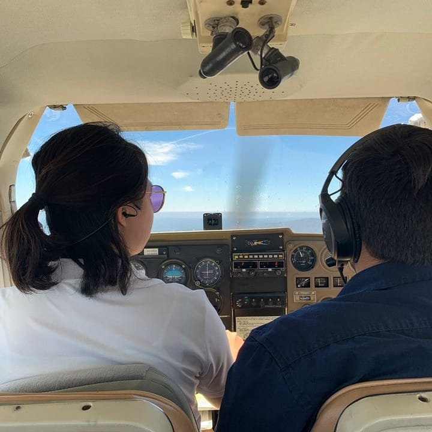
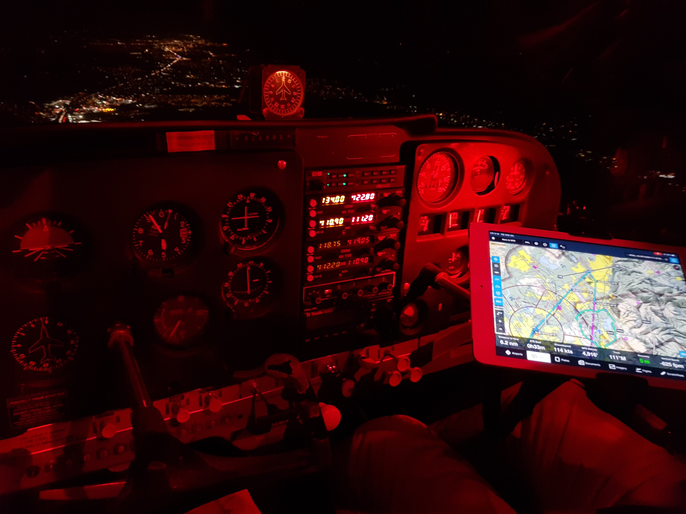
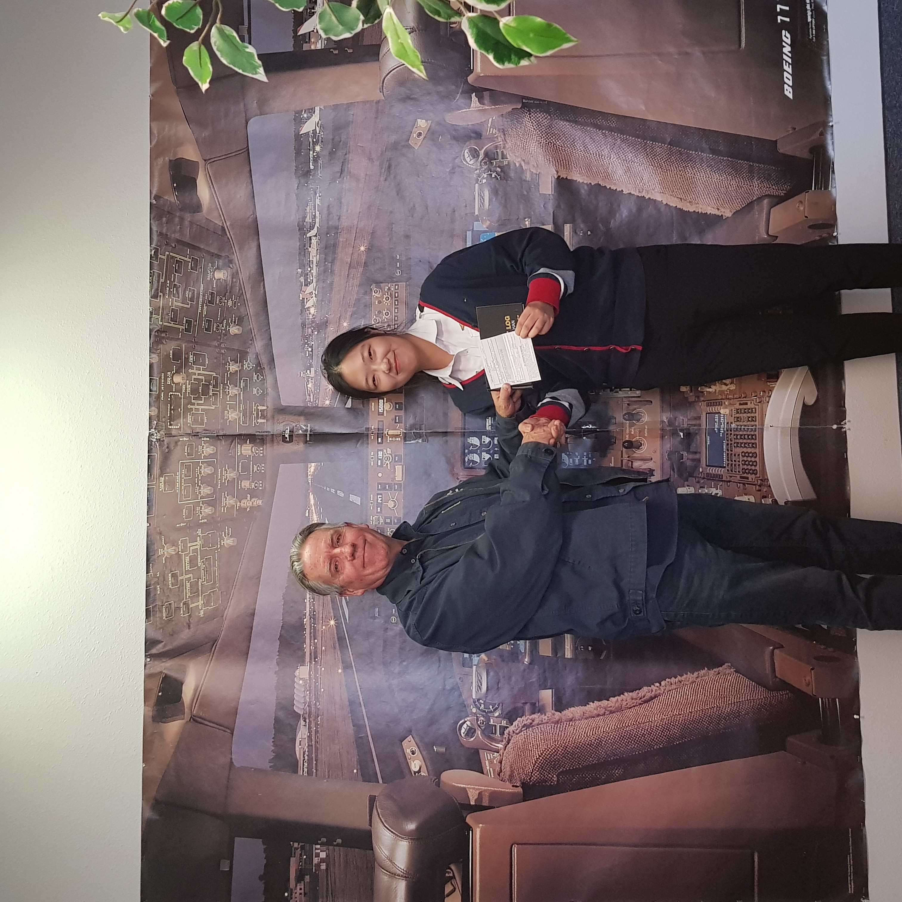
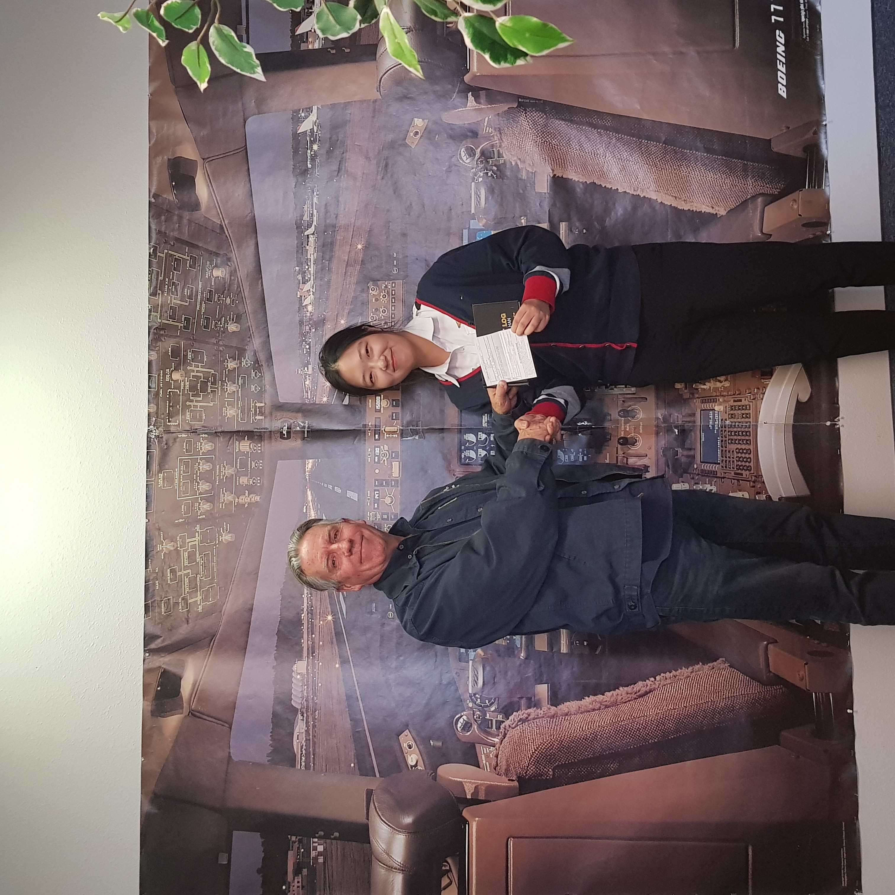
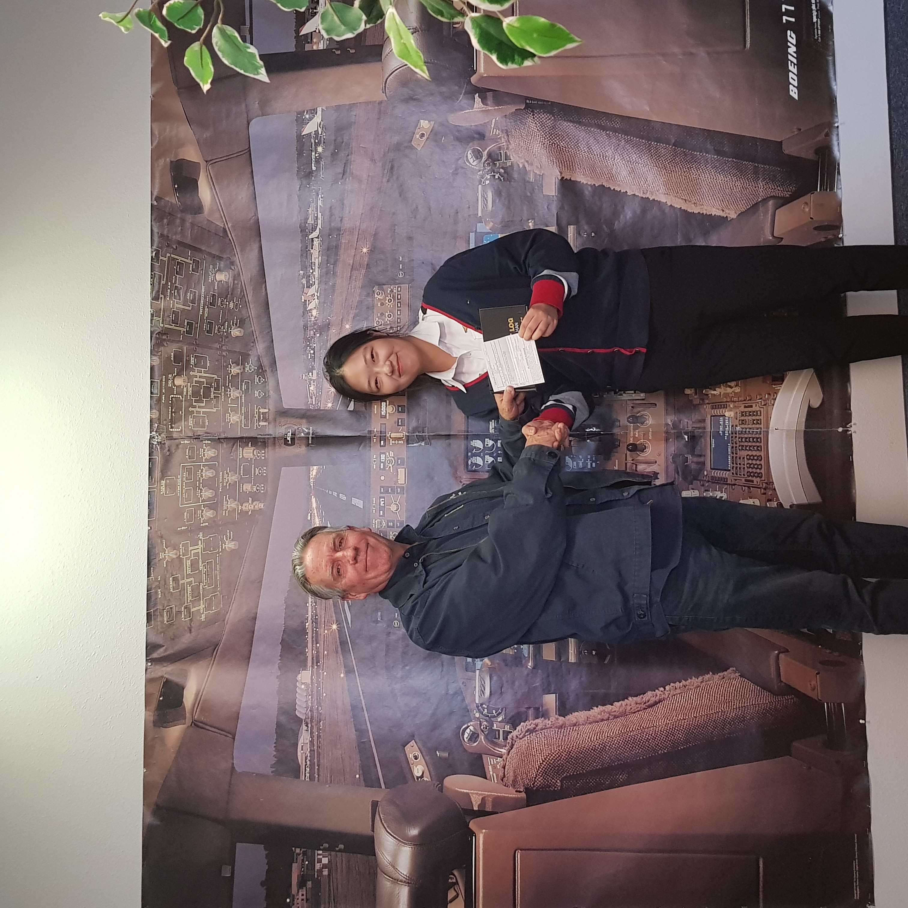

Thank you for taking the time to explore my website! Since childhood, I've been driven by a sense of adventure, a willingness to embrace challenges, and an insatiable curiosity about the world's many facets. My overarching dream has always been to contribute my knowledge to society, and I'm actively pursuing this goal.
Currently, I'm dedicated to my studies at Sungkyunkwan University, where I'm not only acquiring knowledge but also actively involved in activities related to educating students with disabilities. This journey is a testament to my commitment to making a meaningful impact on others.


 

